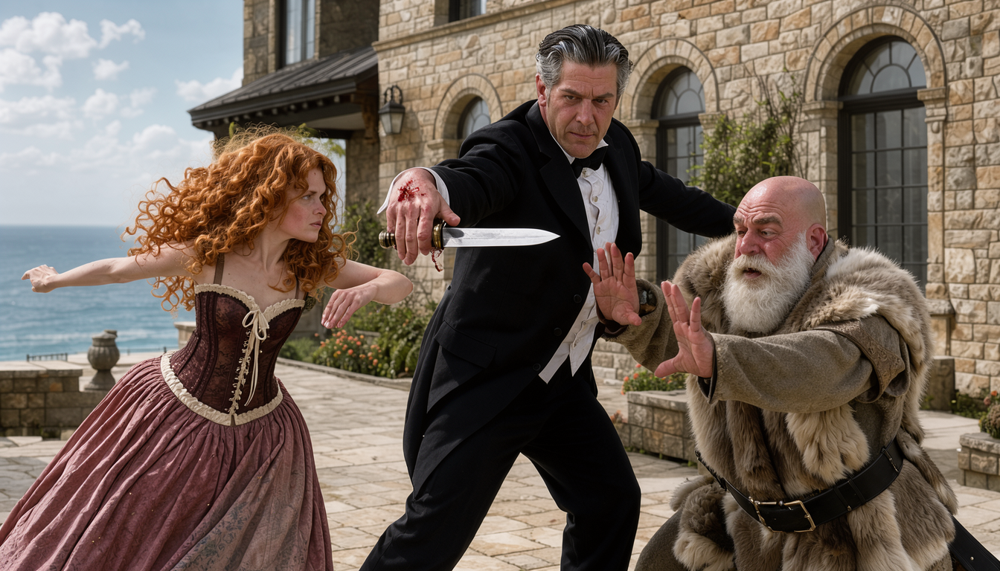
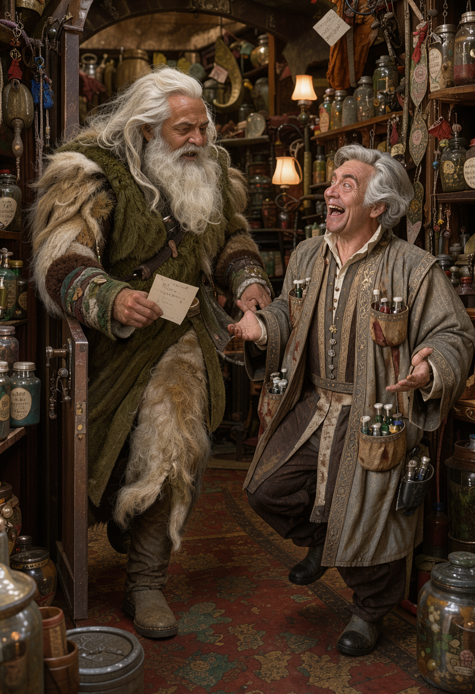
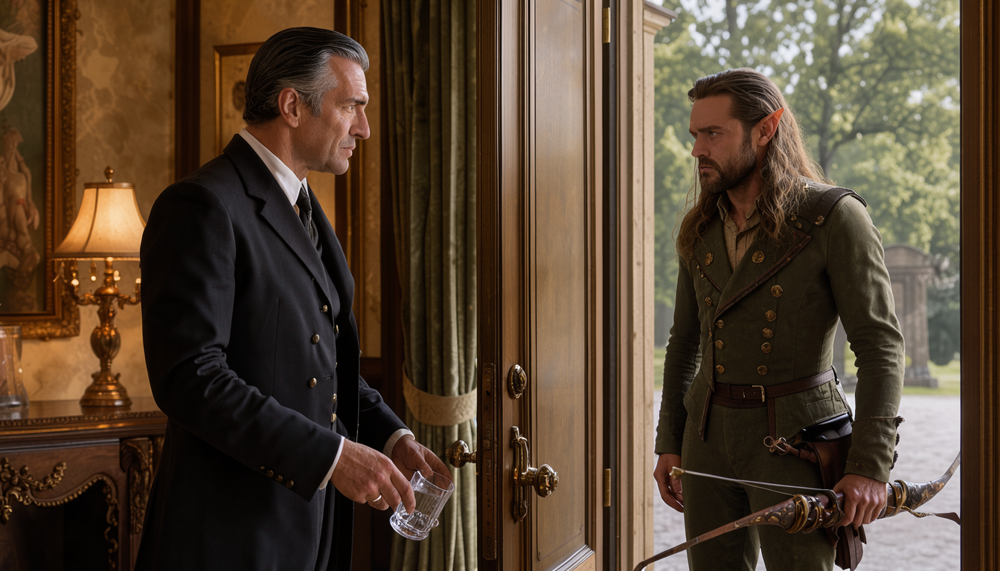
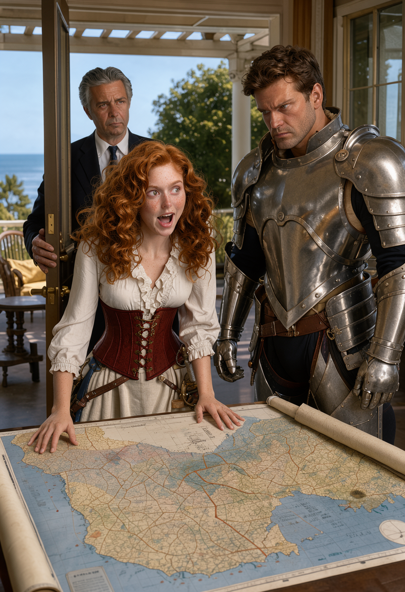
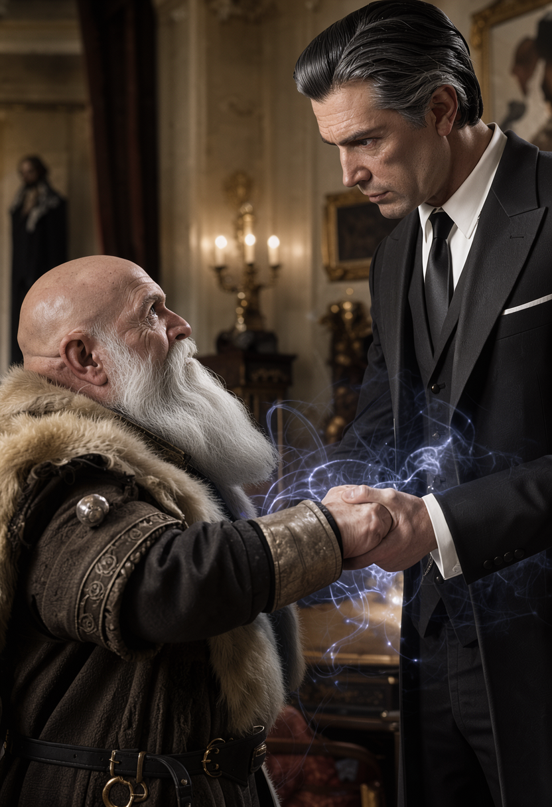
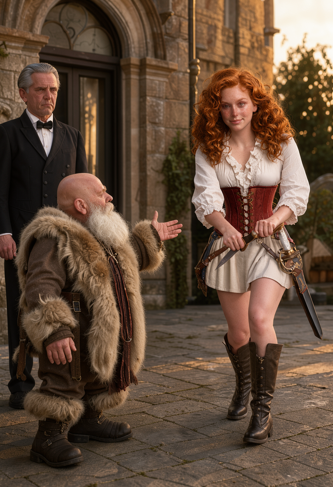
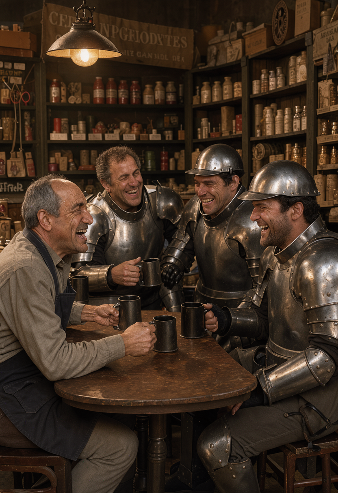
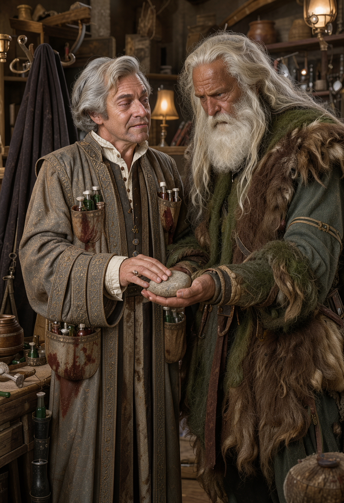
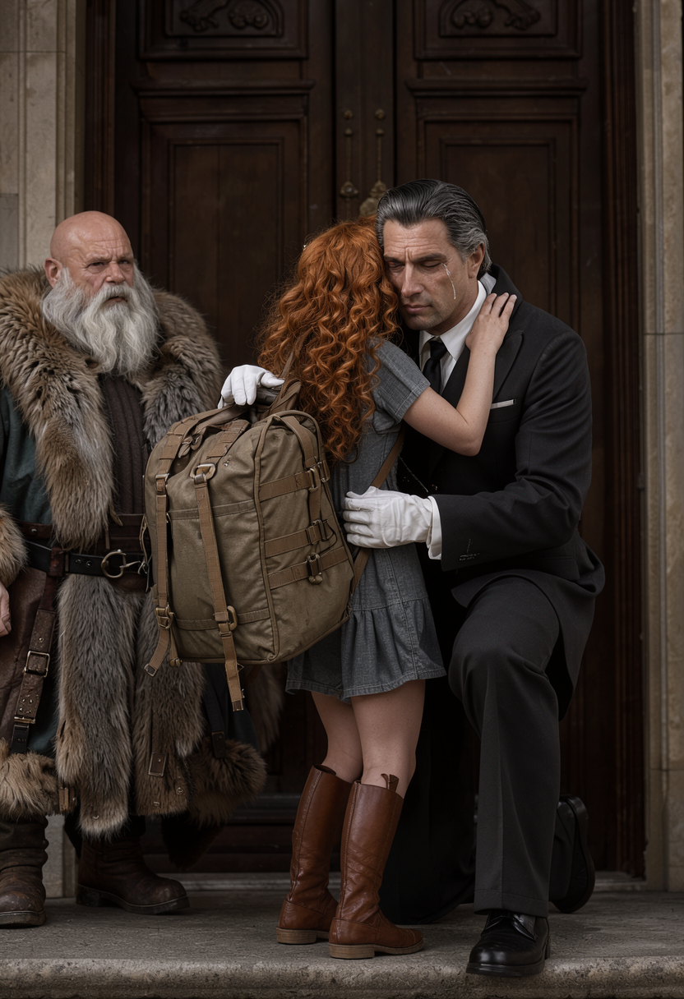
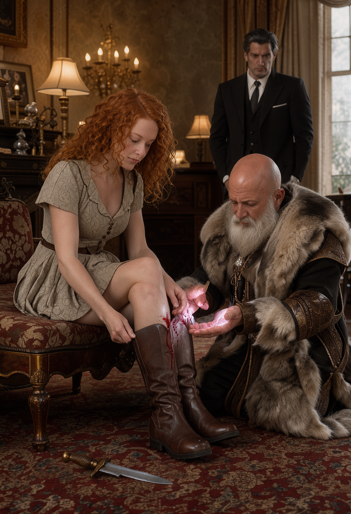

THE CHAOS BRIGADE · JOURNAL 02 · OF REVERSED MAPS AND LOST PATHS
The girl picked up a dagger, and the butler moved faster than anything in armor
is supposed to move.
I want to be precise about this, because my players will tell the story wrong.
Gulgrim held out his hand — palm flat, no dodge, on purpose — and told a
sheltered noblewoman who had been holding a knife for approximately ninety
seconds to stab him. She retched. She recovered. She charged at full sprint
across the sunny back patio with the dagger leveled like a lance.
And Biggins — sixty-something, silver-haired, professional server of tepid
water — crossed several meters of patio flagstones before anyone finished blinking,
caught the blade barehanded, and bled onto the terrace with perfect posture.
Then he asked to clean it.
My name is Ben. I run the game. Last session my players converted a toll booth
into a family reunion. This session they tried to turn a job interview into a
kidnapping, a butler into an enemy, and an apothecary into a recording studio.
Pour something. We begin split in two.

Chapter 1 — Still Split
We open where we closed: split. Chip is across town with an owlbear, three unconscious fake guards, and a handwritten map to an apothecary. Everyone else is standing in a rich woman's foyer holding an offer of six hundred gold and absolutely no details. This is the healthiest this party has ever been, which tells you the state of things.
Vadania tops up first — eleven on the Cure Wounds, back to twenty-four, the ranger patching yesterday's damage before today's damage has even introduced itself.
Then Shade says the thing nobody has said out loud: only Chip knows the guards were fake. The party walked north theorizing about guild ink and never confirmed the premise. The rogue files it the way he files everything — silently, permanently, and smugly.
Housekeeping. I share the handouts in the campaign notes: the forearm tattoo rendered properly this time, so everyone can stop picturing my fuzzy whiteboard version, plus the Neverwinter guard reference. You're welcome. It's still the S. And the AI notes from last session live in the text channel, because the NotesBot audio expired after two weeks and nobody downloaded it — a loss historians will mourn, assuming historians ever develop any interest in whether Derek rolled a one, which he did, on the job board, in front of everyone.
S0 · The split — Two rooms, one inn, zero contact.

Chapter 2 — What Can I Concoct for You Today
Cut across town. Chip is already inside — he arrived at the end of last session, bell dinged, no time wasted — standing dusty in Colorful Creations with a map in a grimy paw and three men tied up in a cellar across town slowly waking up. The shop smells of parchment, sugar, and things that used to be alive. Behind the counter: "Greetings, traveler. I'm Thumba, proprietor of Colorful Creations. What can I concoct for you today?"
Chip does what Chip always does, which is trust first and inventory the consequences later. He asks, more or less, whether the man who sent him — the shopkeep, Roland, though Chip doesn't know the name yet — is trustworthy. Then he rolls insight, privately, to the DM: eighteen. The answer comes back clean. Thumba is genuine. He wants to help. Chip, satisfied the way only a druid can be satisfied by an eighteen he will never explain, hands over the ingredient list without naming the product.
Thumba reads the list. Thumba locks the front door. Thumba turns the sign around, pulls Chip aside past the counter, and asks the question that rearranges the afternoon: "Do you know what these are used for?"
Chip does not, which is exactly why he is the one asking. So Thumba tells him. What Chip has brought him — roots and powders and pickled unmentionables, gathered on someone else's instructions — are the makings of a memory potion. A forgetting draft. And before he brews a single drop, Thumba needs the specifications, because forgetting is precision work: how many people, how much time, what feeling. Chip counts on his fingers. About three men. A conversation in a shop. A shakedown. Getting knocked out. "No pain," he adds, "and forget the whole thing," and I need you to appreciate the restraint here, because this is Chip — the man who once dragged standing stones across a field for fun — calmly ordering precision amnesia before lunch.
Then Chip volunteers the rest, and the room changes. Men pretending to be guards. Weird tattoos on the wrist. Thumba swears — "God damn it, this is the fourth time this month, son of a bitch" — and suddenly the warm apothecary has a cold edge, because this is not a curiosity to him, this is inventory. Four times. He demands to know how Chip found the shop, and Chip produces the shopkeep's hand-drawn map, and Thumba takes it, sprinkles something like grains of sand across the ink, and the map moves. Lines crawl. Drawings morph and shift like something deciding what it wants to be. Chip watches what he later describes as diligently, "as an intellectual," which is Chip for I have no idea what is happening but I am taking notes with my eyes. Then Thumba hands it back, and the moment it touches Chip's hand the image snaps into place — clean, legible, with the route reversed to lead back to the general store. "He made this," Thumba says of whoever drew it. He does not say who he is. [Q4: mapmaker identity — flagged §10.]
What follows is my favorite kind of scene to run and my least favorite kind to narrate, because it is ten minutes of two men being competent at alchemy while everyone at the table leans in like it is a heist. Thumba orders Chip to start grabbing ingredients off the shelves. The back room is a museum of the trade: simmering cauldron, animal hides inside and out, jars of creature parts, alchemy gear spread like a workshop that never closes. Thumba brews and lectures as he goes — the dosage logic, the part I love: pinches of this for forgetting pain, droplets of some dark blood for how long, the recipe bending around the shape of what must vanish. Chip hauls jars. The cauldron bubbles. Somewhere across town, five adventurers are arguing about a map of the whole coast, and the druid is learning pharmacology from a man who locks his door at noon.


Chapter 3 — The Phandalin Pitch
Meanwhile — and I am going to say meanwhile a lot in this journal, because this entire session is two rooms that refuse to become one — the rest of the party is seated in the largest armchairs Lily owns, which is to say armchairs the size of small boats, being served drinks by a butler who clearly believes hydration is a punishment. Biggins returns with a tray of tepid water. Tepid. Glasses of it, all around. He notices Vadania outside on the porch with his bow, on watch, and delivers his assessment on the way past, just loud enough to be unmistakable: "If mediocrity were his weapon, I'd be more scared." Then he sets a glass by the door and withdraws, leaving the ranger outside holding an arrow and a grudge in that order.
Business first. Gulgrim asks whether the posting mentioned an escort. It did not. The posting said "stalwart adventurers" and nothing else — no job, no destination, no details, just money and adjectives. Six hundred gold, confirmed. Lily opens the floor for questions, and Gulgrim — who negotiates the way avalanches negotiate — asks the only questions that matter: where, what loot, what dangers, do we need anything special, are we fighting vampires. Lily unrolls a map of the Sword Coast and traces it with a feather quill: out of Neverwinter, down the High Road, past Waterdeep, past Daggerford, all the way to Phandalin, outside the Misty Forest by the river. A long road. A famous road. A road with things on it.
And here is where Rocketcandy earns his keep, because I call on him specifically — Neverwinter born, noble raised, the only person at the table who would know — for insight on the pitch. Eighteen. And what the eighteen buys is a single irritating word, repeated one time too many: "adventurer." She says it the way people say words they learned from books. A real Neverwinter noblewoman would not talk like a broadsheet. Rocketcandy says so to her face — what do you mean by adventurer — and Lily answers with the pitch underneath the pitch. Adventurers fight monsters. They do dungeons outside the walls. This trip is "just the beginning." She has dreamed about becoming one all her life, and she would like to start by tagging along. It is the worst reason to hire anyone and the most honest thing anyone has said in the mansion all day.
Rocketcandy calls the huddle. "Conversation outside." Lily, gracious to a fault, relocates herself to the back porch under the pergola, overlooking the ocean, and Biggins holds the door for her like this is all perfectly normal. The party stays inside. The door closes. Everybody looks at everybody else.


S1 · The pitch — Six hundred to go. A thousand to stay.

Chapter 4 — A Thousand Gold to Walk Away
Positions, as taken in whispers — all five of them: Gulgrim, Vadania, Rocketcandy, Keechwah, and Shade, quiet as furniture — Gulgrim leans no — no reason, he says, nothing malicious, it just doesn't make sense, which from James is practically a legal brief. Vadania votes yes, low-key after last time, and because — his words, on the record — "I like the crazy women." Rocketcandy is open to the Sword Coast trip and defers the family topic for later, a discussion he keeps scheduling and never holding, the way other people keep gym memberships.
Then Keechwah, who has been watching the door the way Keechwah watches everything, says Biggins is eavesdropping. Openly. Interestedly. Eighteen on perception, and the butler doesn't even pretend otherwise. So they wave him over. He excuses himself to Lily, closes the porch door behind him — the girl on one side of the glass, the conspiracy on the other — and joins the huddle, where Keechwah looks again, harder: twenty-two. And what the twenty-two buys is the session's quietest bombshell. Biggins moves effortlessly. He carries himself with a command presence that can be worn or hidden at will, and Aaron's read is blunt: this is beyond any servant he has ever seen, and beyond most nobles too. The butler is ex-military, ex-something, ex-somebody. The table goes very still. The man who served them lukewarm water is the most dangerous person in the room, and everyone finally knows it at the same time.
Biggins wars with himself visibly — and I want that verb on the record, because NPCs do not usually get to hesitate in my game, and this one is fighting himself in front of five witnesses — and then he makes his offer. One thousand gold pieces. To not take the contract. To walk away and leave the girl in the house. A bribe, paid by the help, to refuse the quest. The table has been playing this game for months and nobody has ever been offered money to decline adventure, and Vadania erupts on the spot — audible, defiant, not intimidation but something purer: "Oh, no. We taking the contract now. Definitely taking the contract now." Spite. The quest is accepted out of spite, because the butler flexed. I have run eleven sessions and the plot has been advanced by spite more often than by gold, and I am including this one in the official count.
Terms get clarified through the shouting: the job is just Lily, she wants out of Neverwinter, and would Biggins come along or interfere? So far, just her. And why does she want it, Gulgrim presses, and why would you block it — to which Biggins answers plainly, no varnish: she is not ready. She invites strangers in off a paper notice. She has never been outside the city walls. And then Keechwah does the thing Keechwah does — tests it, twenty-two backed by an eighteen, reads the man like an instrument — and reports: sincere. Genuine. The care reads parental, not professional. He is not protecting an employer. He is protecting a daughter who is not his daughter, and the table hears that and recalibrates everything.
So Gulgrim builds the bridge. Not Phandalin, not yet — a local adventure, in and around the city, with the party as chaperones: tag along, see the warts and all, learn what adventuring actually is, up to and including, James says, waving the reality flag with both hands, "sometimes you gotta poop in a hole." Biggins appraises him the way a father appraises a suitor and gives conditional consent: give me your word she stays safe, and you may take her outside these walls. He extends his arm to seal it. Gulgrim checks the table — unanimous, city scope, not Phandalin, Rocketcandy blocked mid-handshake-rush because his perception is zero and his enthusiasm is not — and takes the forearm grip: "we will keep her safe or die trying." Eighteen on arcana, and the handshake lands: real magic, a sealed pact, failure exacting a price nobody names, and an old man's grip with uncanny strength behind it. The porch door opens. Lily is in the sun with her boots off, and none of them will ever shake a hand casually again.

S2 · The terms — A thousand gold to walk away.
Chapter 5 — Stab Me
The revised pitch, delivered with all the warmth of a terms-of-service update: local notice-board work, not Phandalin; it will not always be pretty or fun; people die; no guarantees. And Lily — sheltered, silk-clad, bootless Lily, who has been served tepid water in armchairs all her life — hears the warning, nods along, and snaps. The facade peels off like paint in a fire. She has been told all her life to stay put because she has money. She wants to get dirty. She wants scars and stories and a death that means something. "I want to do wrong things for the right reasons," she says, manic and bright, and I am writing this down exactly because NPCs do not usually frighten me and this one just did. "Did you grow up under power lines or eat lead paint?" I ask the table. Nobody answers. Nobody can. She is already moving.
Capability check. Lily claims magic: a thumb trick, a rings trick, both taught by "Biggs," and I am keeping the transcript's spelling in my notes forever. Gulgrim asks Biggins about a sewer entrance — rats, first trial, blood and reality before commitment — and Biggins silently shakes his head no, which is the most merciful thing anyone does all session. Then Gulgrim hands Lily a dagger. She receives it the way other girls receive ponies: ecstatic, both hands, "my first knife," flung around Roberto-style, dropped half a dozen times on my floor. And then — because James plays pedagogy the way avalanches play downhill — Gulgrim holds out his hand, flat, no dodge, and says: "Like, right here. Go ahead. Stab, like. Put knife into flesh."
Reader, she retches. She doubles over and vomits on the patio flagstones, straightens up, says "That's better," and charges. Full sprint, dagger leveled, screaming girl across a sunny terrace at a dwarf who is not moving. And Biggins — sixtyish, silver-haired, professional pourer of tepid water — crosses several meters of patio before anyone finishes blinking and catches the blade barehanded. Blood trickles down his hand. Gulgrim staggers backward — constitution save, fourteen: roll to shrug off the shockwave, fourteen barely does it — rocked by nothing but the wind of the intercept. Biggins examines the bleeding palm the way other men examine receipts, turns to the dwarf, and asks to be excused to go clean the dagger. On his way out he hits Gulgrim with Vicious Mockery — a spell whose entire damage is one perfectly aimed insult, six points of psychic hurt — "if this was part of your grand plan, I hope you kept the receipt" — and keeps walking.
The table detonates into the caged-bird debate. Gulgrim shouts it down the hall: clip her wings and keep her safe, fine, but caged is still dead — "It'll kill her anyway." Biggins, without stopping: "better a caged bird than to die a fool." And Lily, blood on her skirt and someone else's blood on the floor, looks up brightly and asks, "That was fun. Do you have another one?" Gulgrim produces a second dagger without a word. She tucks it unsheathed, upright, into her skirt like a flag, and is prouder of it than anything she owns. The plan, such as it is: sewer rats. Force her to face blood and reality before anyone commits to anything. It is the worst plan the party has ever made, and I approve of it completely, because it is the first plan that treats the girl like a person instead of a parcel.

S3 · Stab me — Vomit, sprint, impossible.

Chapter 6 — Salt-Shaker Vials
Cut back across town, where the forgetfulness business is concluding without a single Warcraft reference. Thumba finishes the brew and hands Chip three vials the size of salt shakers: one full bottle per man, each man drinks the whole thing, no pain, the emotion and the event go away, and the potion helpfully fills the hole with something plausible. Chip takes the vials, takes the reverse map, and Thumba — who has been warm and avuncular all afternoon — stands up, pulls on a cloak, raises the hood, and goes full theater: "Was that dark and mysterious? Because I was really going for that. This hood is awesome. I love this thing." Reader, the apothecary from the haunted corner table is this man. The mist, the pipe, the menace — community theater with a cauldron. Chip affirms the look sincerely, because Chip affirms everything sincerely, and Thumba beams, and asks only one favor in return, to be collected later: come back afterward, so he can extract it. Ominous. Delightful. Unpaid-foreshadowing, the most dangerous kind.
The alleys back are strays and shadows. The general store's back room is exactly as left: three guards tied by the stove, the trusty pan resting on top like a trophy, Tangled-style, Rapunzel-grade. What follows is ten minutes of the least glamorous heroism in the chronicle to date: the shopkeep and the druid pinching noses and pouring vials down three throats while the men cough and sputter and swallow. Medicine thirteen: five to ten minutes until they wake. The clock starts. Then staging: guards hauled up and slumped around the gathering table like drunks, Chip ordered to hide in the back — and the problem nobody budgeted for, standing in the street out front, covered in children.
Water Bear has been discovered. A cluster of street kids is crawling all over the owlbear — "fluffy," they have decided, collectively, and one of them wants to know if his mother can get him one too — and the shopkeep gives Chip about two minutes to move several tons of adorable before the world's most conspicuous alibi blows the operation. Chip rolls investigation: twenty. A couple of houses up the alley stands a defunct building with old horse stables behind it, empty, perfect, and Chip marches the bear in on a stay command and walks back through the back door — no bell, no announcement — into laughter. The owner and the three guards are drinking mugs together, mid-joke, the tail end of something ending "...Mother, I hardly like her," and the guards are thanking their host by name. Roland. The shopkeep has a name now, and it is Roland, and he earned it by knocking out two men with cookware.
And then, with the mugs still steaming, Roland talks. Really talks. Balding, salt-and-pepper, laugh lines and crow's feet, tired bags under the eyes, aged a decade in the last year: "You and me both — I hate cities," Chip offers, and means it, and Roland looks at the druid like a man looking at a mirror with better hair. He came to Neverwinter for riches. He is still here running general goods in his later years. And the truth, the thing the wrist ink was always pointing at: the "guards" are Thieves Guild, Neverwinter branch, and the wrist mark is the guild mark. There used to be a deal — the old gentleman's handshake, discounts for protection, thieves of honor, "Why can't it be like the good old days?" — and it broke about eighteen months ago. New guild master suspected. The shakedowns went from one or two percent to a service tax to forty percent a week. "Get out of town as quickly as you could," Roland says, and means it as kindness. Payment for the druid who backed a gutsy call: anything in the store he needs, on the house. Chip restocks for the road, hunts a quarterstaff, and walks out heavier than he walked in — in every sense except gold, of which he now has forty less, plus interest.

S4 · Staging — Vials, kids, stables.

Chapter 7 — Theme Music and Goodbyes
Late afternoon, early evening — that bruised-gold hour when Neverwinter looks expensive — and Chip, errand complete, returns to the apothecary as instructed, because Thumba said to come back and Chip does what he is told when the telling involves magic. The favor, revealed: Thumba produces a stone. Palm-sized, oval, smooth past lake-smooth, and wrong the way powerful things are wrong. Arcana twenty-three — roll to know magic things, and twenty-three knows plenty — and Aaron's read comes back clean: sending-stone-like (paired message-rocks wizards use to talk at distance), but modified to broadcast sound on its own, no paired stone, no partner on the other end — a loudspeaker with ambitions. The terms: Thumba wants drama. Theme music. A mysterious persona needs an entrance, and entrances need strings — fiddle, violin, gravitas you can bow — and would Chip kindly find a musician who can imbue the stone, starting with the evening taverns where the nightlife plays? Chip accepts the side quest the way Chip accepts everything: completely, immediately, and without asking what it pays. Thumba recommends the Inn of the Horned Rabbit, down by the river — sunsets, the view, draws the most talent in town. Chip pockets the stone, steps out to Water Bear, and points himself at the river. The druid has a gig. The gig has a bear. Nobody at the table sees anything strange about this.
Meanwhile, back at the mansion, the evening is doing goodbyes. It starts with footwear: Lily, buckling her boots back on, drags the dagger across the floor, finds it with her hand — "That's sharp" — and opens a trickle of blood down her skirt. Off with the boot, out with the wounded paw, and Gulgrim closes it with Cure Wounds, eleven: the wound shuts, the skirt stays bloodstained, and Lily hikes the whole thing "clear up out of the way" and asks, bright as sunrise: "Is there a scar?" There is not. "Not how magic works," Biggins says, re-entering on cue — "my dear, please put your skirt down" — and Lily says "fooey," drops the skirt, and accepts her returned dagger with a spin. Biggins turns the blade over in his palm like a coin, hands it back pristine, and warns Gulgrim, with feeling, about handing edged weapons to civilians. Then — the coat. Biggins opens his own petticoat to reveal a dagger sheath sewn inside, seats her blade in it like it was measured, closes up, and leads the party to the wardrobe: ornate, enormous, full of the finest enchanted kit imaginable — lightweight armor resistant to magic and steel, weapons of stupid quality, a curio cabinet that waves an aura at you when the doors open. Lily tries on half of it ("measured for it — fits like a glove," she crows; "That one is a glove, madam," says Biggins, deadpan, because the glove in question is a glove). The glove fits. Of course it fits. The universe has decided Lily gets whatever she reaches for, and the universe is not taking questions.
Departure prep is logistics as comedy. Lily's rucksack is twice her size — below the butt, above the head, a leather continent with straps. Biggins recommends the Inn of the Horned Rabbit for the night: high quality, correct direction out of the city. Thumba recommended the same inn an hour earlier, across town, to a different adventurer, and I say nothing about this on the record except: "Are you metagaming me here?" Both threads. One inn. No railroad, just gravity. The party does not know Chip is headed there too. Chip does not know the party is headed there too. I know. I know everything. This is the best part of the job.
Goodbyes, then, and they are real ones. Biggins stops Gulgrim at the door with a hand on his chest — remember the pact, remember the promise — and then there is the hug: Lily's arms not fully reaching around him, a tear making its way down his cheek, the old killer holding the girl like weather. Parting rules, delivered like scripture: always cook your meat. Put the fire out before you sleep. Never sleep on the ground. He opens the door. They march for the Horned Rabbit, boots and paws and one enormous pack, into the river dusk — and Gulgrim, whose eyes miss nothing twice, looks back: the stopping hand is the same hand. The blade-catch hand. No bandage. No blood on his armor either. Nothing healed, and nothing to heal.
Nobody died. See you at the inn. Whatever — or whoever — gets there first.


S5 · Goodbye — Fooey. Fits like a glove.
